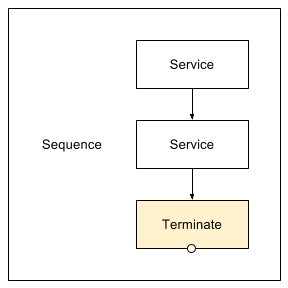

The Terminate service swallows events. A Terminate step is automatically inserted when a Sequence is created.
Every Sequence must have a terminate step. Any services after the terimate step will not be executed.
